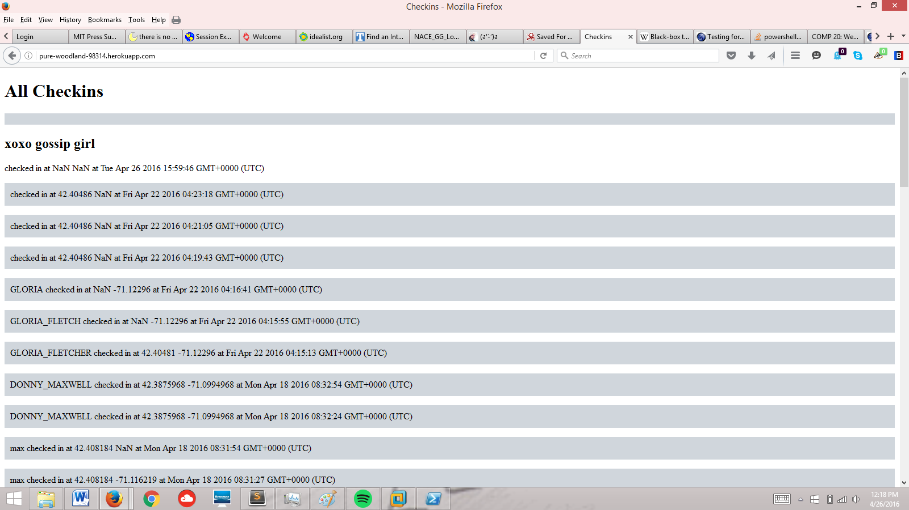
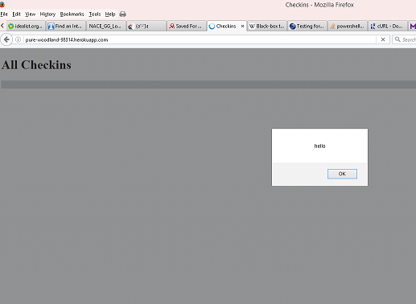
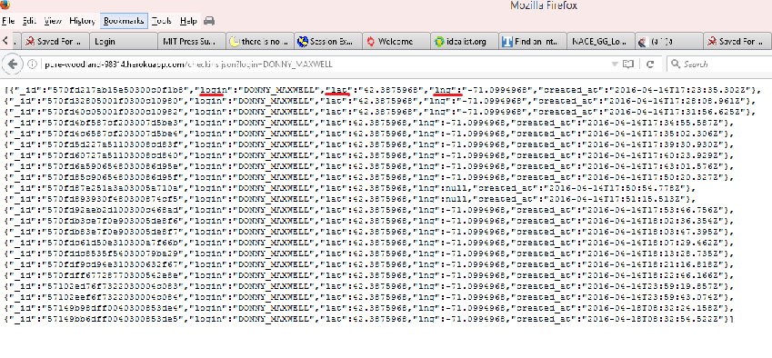
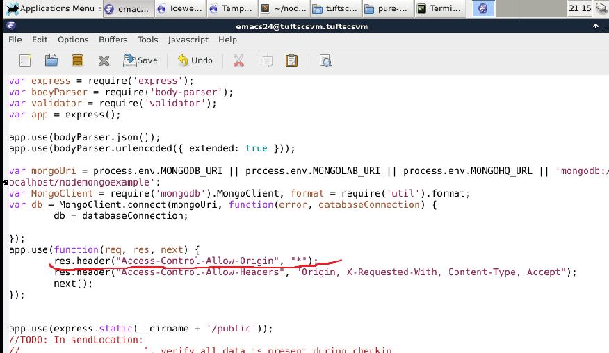

Assignment 4: Security
by Laura Donovan, 4/26/2016
Introduction
This is a security assessment of M. Pokharen's web application, Landmarks. The purpose of this web application is to take in users' login, latitude, and longitude, insert them into a database, and use that cumulative user information to render markers for users as well as for nearby historical landmarks on a map. My task was to find security and privacy issues with this web application.
Methodology
First, I performed black-box testing: I knew that logins, latitudes, and longitudes were being entered into a database because the default page on the web application showed multiple entries with those same keys. I used curl to insert my own HTML or JavaScript code into the database. Then, I looked over the source code.
Abstract of Findings
Many of the security issues with this web application have to do with not scrutinizing user input or replacing non-alphanumeric characters, as well as giving users direct access to database information and the application as a whole. In terms of privacy issues, user information is displayed right on the home and checkins pages; additionally, the MongoDB username/password are coded into the document.
Issues Found
- Issue #1: Injection
- Location: This issue is in the POST API ('/sendLocation').
- Severity: High. In this case, I only injected HTML but noSQL code could be injected, too, which could involve insertion and deletion of database records.
- Description of issue: The three key-value pairs posted to /sendLocation are not checked or sanitized, just inserted as-is into the checkins database. Instead of one's true login/latitude/longitude, a user can input their own HTML/NoSQL code or just bad data, altering the veracity of the map's representation of user information and potentially compromising the collection itself.
- Proof of vulnerability:

- Resolution: check and sanitize user input. One way (not the most efficient, maybe, but still effective) to do so could be by implementing the following code:
function Sanitize(input){
for (var i = 0; i < input.length; i++){
if (input[i] == '&')
input[i] = '& amp ;';
else if (input[i] == '<')
input[i] = '& lt ;';
else if (input[i] == '>')
input[i] = '& gt ;';
else if (input[i] == '"')
input[i] = '& quot ;';
else if (input[i] == ''')
input[i] = '& #39 ;';
}
}(NOTE: to use code above, remove spaces after ampersands and before semicolons; those are solely there to prevent the encodings from rendering as the characters)
Then, one could apply this function to any user input to remove special characters and render it ineffective.
- Issue #2: Cross-Site Scripting
- Location: inputted at '/sendLocation', but shown to user in both GET APIs.
- Severity: High. This is one of OWASP's top security risks. An attacker could redirect users of the website to unsafe websites, access their cookies, or just spam them with alerts.
- Description of issue: the POST API takes three key-value pairs and inserts them into the database; the '/' and '/checkins.json' GET APIs display relevant/all records in that database, allowing for unscrutinized, user-inputted JavaScript to possibly be executed on those routes.
- Proof of vulnerability:

- Resolution: Sanitize user input. See previous resolution.
- Issue #3: Insecure Direct Object References
- Location: the '/checkins.json' GET API
- Severity: Moderate. Can be used to facilitate injection or cross-site scripting, but on its own is not world-ending.
- Description of issue: The route '/checkins.json' spits out unmodified JSON data from the collection and thus directly displays the keys 'login,' 'lat,' and 'lng' without modifying the key name. This directly provides any potential attacker with the keys they would need to access the database in a fraudulent POST request.
- Proof of vulnerability:

- Resolution: Do not directly output JSON data from the database. Modify key names to something that conveys the same idea but, if used in a POST request, would not allow access to the database. For instance, instead of saying "login," "lat," and "lng," one could write "username," "latitude," and "longitude." This would prevent unauthorized reference to these keys while conserving meaning.
- Issue #4: Bad coding practice
- Location: Response header.
- Severity: Moderate. This could allow any domain to access the site and thus risks Cross-Site Request Forgery.
- Description of issue: All domains are allowed to access/post to the web application, including those which are untrusted.
- Proof of vulnerability:

- Resolution: Replace the '*' with a whitelist of trusted domains.
Conclusion
There are also privacy concerns, such as listing people's geolocation and the exact time when they were there-- it might be better to not give exact latitude and longitude, or give an approximation of the time. Also, hardcoding one's MongoDB username and password could let an attacker steal them and then access your database. This could be remedied by not including that URI.
In conclusion, this web application's security issues can be mostly fixed by restricting user access to back-end code and sanitizing user input. As it stands, the existence of these security issues makes it difficult to ensure the legitimacy of records on the GET APIs and user markers on the map.